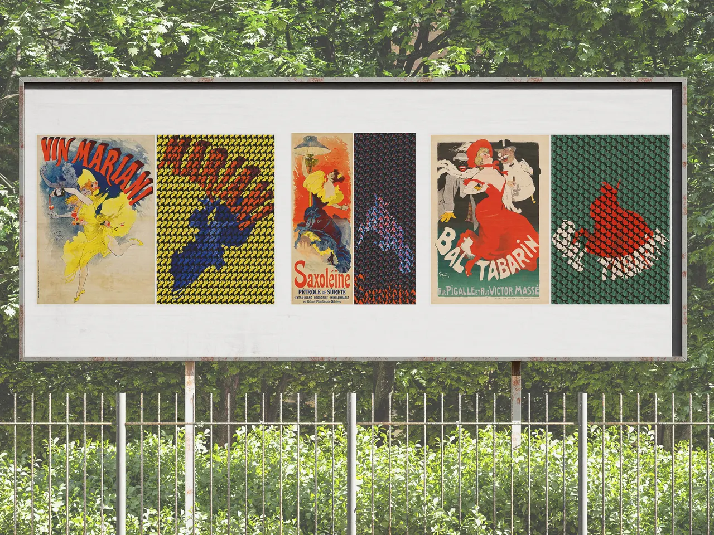
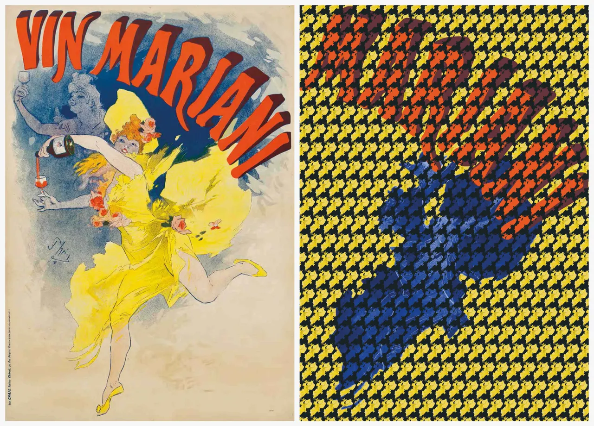
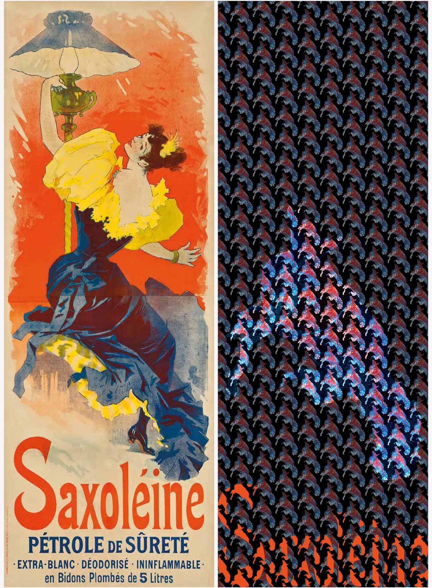
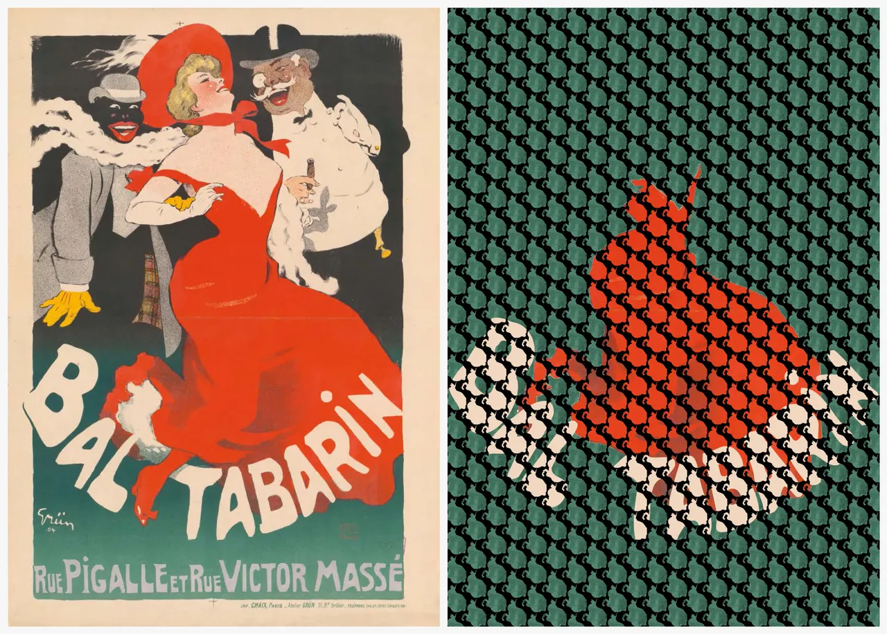

FORTE-IMPRESSION
- 50 × 80 cm, 29 x 80 cm, 56 x 80 cm
- 2025
Ce projet fut réalisé lors de l’exposition « L’art est dans la rue » au musée d’Orsay. Il fut l’occasion pour moi de transmettre mes impressions d’affiches dont les figures féminines portent des robes aux mouvements extravagants. C’est une réinterprétation des volumes et des formes par des jeux de motifs et de couleurs. Le résultat sort les sujets du contexte et permet à chaque spectateur d’y voir des choses différentes.
Et vous, qu’y voyez-vous ?





